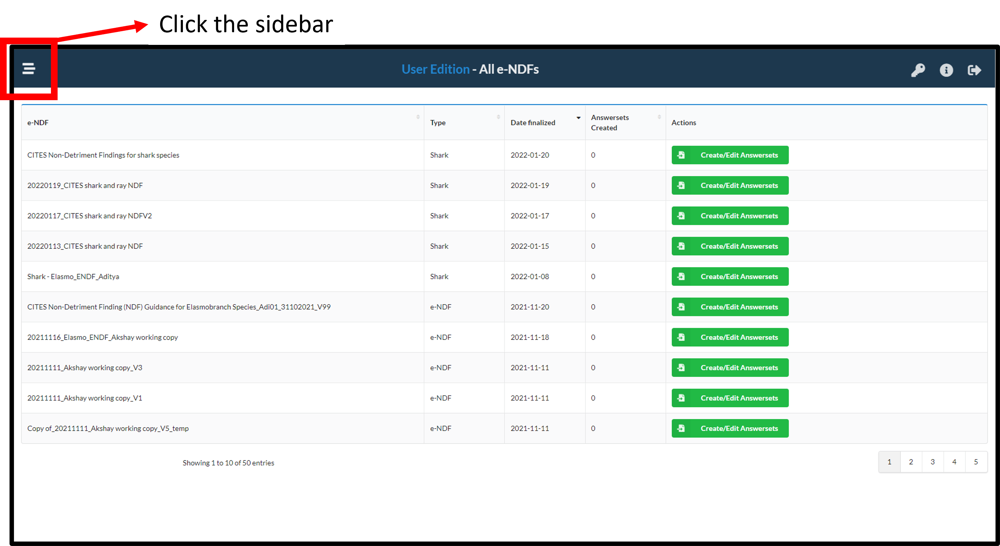
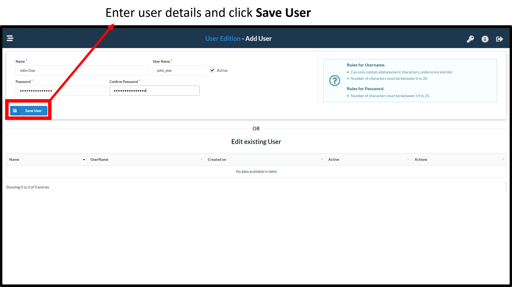
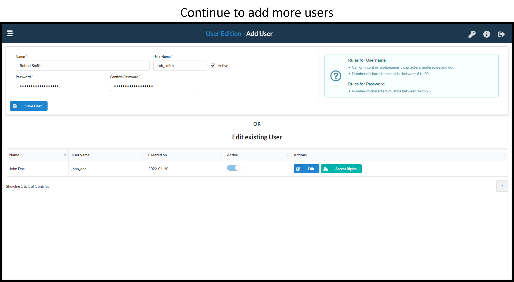

2 Creating users with permissions to fill in an e-NDF
An e-NDF admin can create multiple users to fill in an e-NDF. The admin can also assign access rights to specific questions/sections/steps of an e-NDF to each user. The steps involved are illustrated below.
2.1 Click the side bar

2.3 Enter details for the user and assign a password
Provide the name, a user id and a temporary password for the user. The user will be prompted to change this password on first login. If the user loses their password, they can contact the admin to reset their password to a new temporary password. 
2.4 Continue to add users as required
